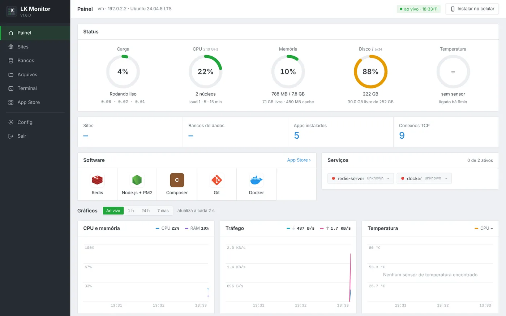
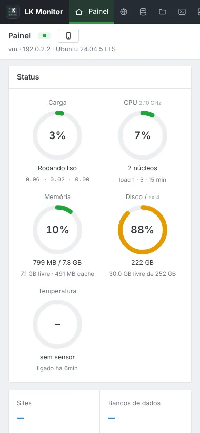
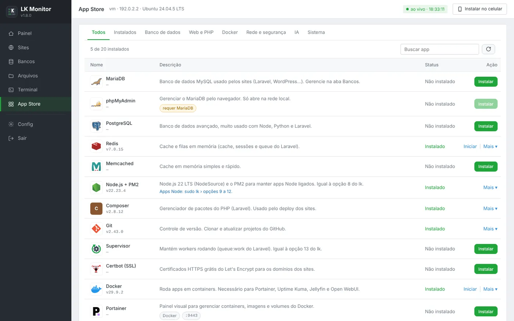
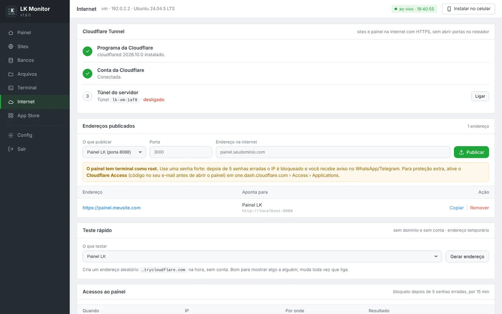
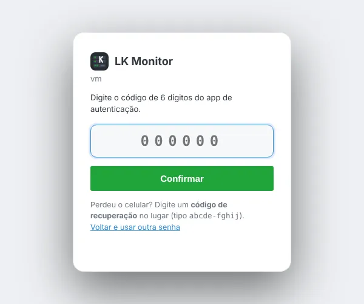
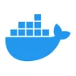
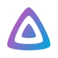
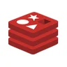
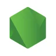
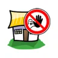

Seu PC velho virou servidor de verdade.
O LkPanel transforma um notebook ou PC parado em casa num servidor com painel completo: sites, bancos de dados, arquivos, terminal, App Store e acesso de qualquer lugar do mundo.
curl -fsSL …/install.sh -o install.sh && sudo bash install.sh

Tudo o que um painel de hospedagem tem, no seu servidor de casa.
Sem mensalidade e sem servidor alugado. Você usa o computador que já tem.
Monitor ao vivo
CPU, memória, disco, temperatura e rede atualizando a cada 2 segundos, com gráficos de até 7 dias.
Sites e deploy
Crie sites em segundos, faça deploy de Laravel, backups com restauração, SSL grátis e logs.
App Store
22 apps com instalação de um clique: Docker, Jellyfin, Ollama, PostgreSQL, Redis, Tailscale e mais.
Bancos e arquivos
MariaDB e SQLite com consultas, e um gerenciador de arquivos com editor de código, upload e zip.
Terminal no navegador
Terminal completo com abas, direto no painel. Também dá para reiniciar e desligar o PC com um botão.
Seguro de fábrica
Login com 2 fatores, bloqueio de IP depois de 5 senhas erradas e aviso no WhatsApp ou Telegram.
Bot no WhatsApp
Avisos do servidor no seu celular e um bot que responde STATUS, REINICIAR e DESLIGAR. Instala pela App Store.
Instala sem perguntas
Um comando instala Apache, PHP, MariaDB, SSH e o painel. No 1º acesso você cria a sua senha.
Acesso de fora de casa
Tailscale, Funnel ou Cloudflare Tunnel: use o painel e mostre seus sites sem abrir portas no roteador.
Visual clássico, fácil de achar tudo.
Menu lateral, caixas claras e tudo em português. Funciona no computador e no celular, e dá para instalar como app.




DockerWhatsApp + Bot
JellyfinOllamaMariaDBPostgreSQL
Redis
Node.jsTailscaleUptime KumaPortainer
Fail2banphpMyAdminTrês passos e o servidor está no ar.
Precisa de um computador com Ubuntu ou Debian e acesso de administrador (root).
Baixe e rode
No terminal do servidor, cole o comando e aperte Enter na pergunta. Ele instala Apache, PHP, MariaDB e o painel sozinho.
curl -fsSL …/install.sh -o install.sh && sudo bash install.shAnote a senha temporária
No final aparece o endereço, o usuário root e uma senha temporária. Sem perguntas.
http://IP-DO-SERVIDOR:8088Crie a sua senha
No 1º login o painel pede uma senha nova, e ela pode valer também para o root e o SSH. Para usar de fora, veja a dica abaixo.
sudo lkmenu no terminalRequisitos
| Sistema | Ubuntu 22.04, 24.04 ou 26.04 · Debian 12 |
| Memória | 2 GB (4 GB ou mais para Docker e IA) |
| Disco | 20 GB livres |
| Acesso | root ou usuário com sudo |
| Internet | para baixar os pacotes na instalação |
Acesso de fora de casa, sem gastar
Dúvidas comuns
É grátis mesmo?
Sim. O LkPanel é grátis e roda no seu próprio computador. Você só paga se quiser um domínio próprio (uns 10 dólares por ano), e isso é opcional.
Serve num notebook velho?
Serve, e o notebook ainda tem uma vantagem: a bateria segura o servidor se a luz piscar. O LkPanel tem um modo servidor que apaga a tela, deixa a tampa fechada sem suspender e controla a temperatura.
Minha internet tem CGNAT. Funciona?
Funciona. Com o Tailscale ou o Cloudflare Tunnel você não precisa de IP público nem de abrir portas no roteador.
É seguro deixar o painel na internet?
O painel vem com bloqueio de IP depois de 5 senhas erradas, login com 2 fatores e aviso no celular quando alguém tenta entrar. Mesmo assim, o mais seguro é acessar o painel pelo Tailscale e publicar na internet só os seus sites.
Posso instalar num servidor alugado (VPS)?
Pode. Ele funciona do mesmo jeito em qualquer máquina com Ubuntu ou Debian, em casa ou na nuvem.
Como atualizo?
Baixe o instalador novo e rode de novo. Ele atualiza o painel e mantém a porta, a senha e todos os seus dados.
O que mudou
Instalação completa sem perguntas (lk setup), senha temporária trocada no 1º acesso (que liga o root no SSH) e o bot do WhatsApp dentro do LkPanel, com app na App Store.
Login com 2 fatores (Google Authenticator), códigos de recuperação e aviso no celular.
Aba Internet com Cloudflare Tunnel, bloqueio de senhas erradas e histórico de acessos.
Visual novo no estilo clássico, com menu lateral e Painel redesenhado.
App Store com 20 apps e instalação de um clique.
Botões para serviços, processos, modo servidor, reiniciar e desligar.
Bora ligar o seu servidor?
Leva uns 5 minutos. Depois é só abrir o navegador.